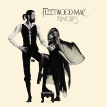

Mijn muziek
Favoriet nummer
Playlist
Queens of the Stone Age - Domesticated Animals
DJ Shadow feat Run the Jewels - Nobody Speak
Focus - Hocus Pocus
Anderson Paak - Come Down
Albums
And So I Watch You From Afar - And So I Watch You From Afar
Fleetwood Mac - Rumours

Pearl Jam - Ten
Festivals
Pukkelpop
Rock Werchter
Tomorrowland
Graspop
Dour
Pukkelpop
terug naar boven
Rock Werchter
terug naar boven
Tomorrowland
terug naar boven
Graspop
terug naar boven
Dour
terug naar boven